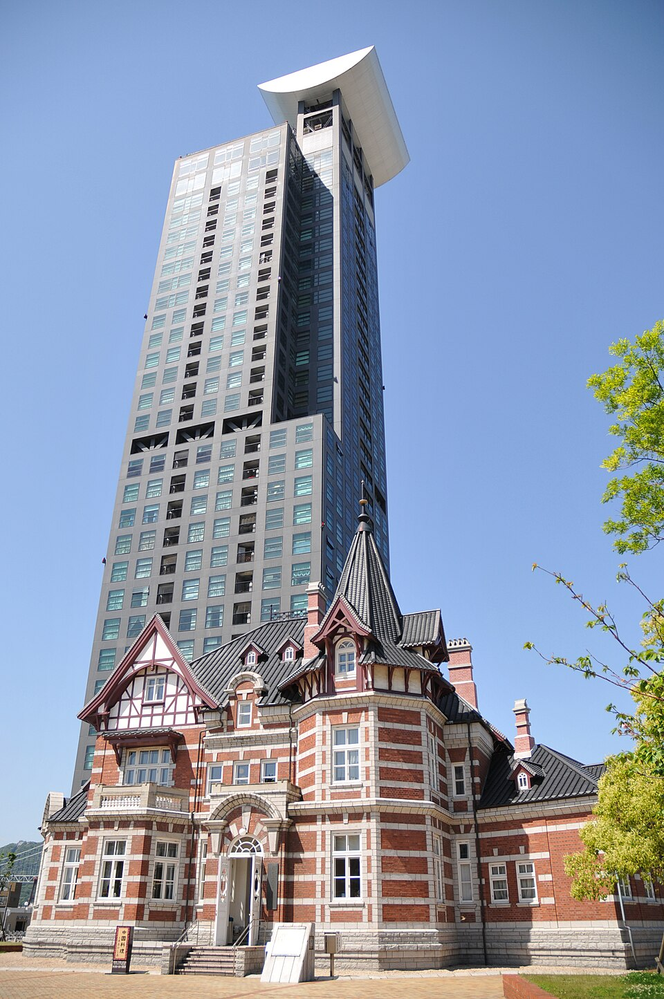

都市景観100選
歴史的建造物と現代アートが融合する街
門司港レトロは、明治から大正にかけて国際貿易港として繁栄した門司港の面影を今に伝える人気の観光エリアです。
洋風建築の美しい街並みが保存・復元されており、レトロな建造物と海辺の絶景が織りなすノスタルジックな雰囲気を散策しながら楽しむことができます。
門司港レトロの主な見どころ
門司港駅
1914年（大正3年）に建てられたネオ・ルネサンス様式の駅舎。木造駅舎としては初めて国の重要文化財に指定されました。
門司港レトロ展望室
高層マンション「門司港レトロハイマート」の31階にあり、関門海峡やレトロな街並みを一望できる絶景スポットです。
名物「焼きカレー」
ご飯の上にカレーとチーズ、卵をのせて香ばしく焼き上げた門司港発祥のご当地グルメを満喫できます。
施設情報
| 所在地 | 福岡県北九州市門司区港町・九曜 simplistic ほか |
|---|---|
| 散策時間 | 自由（各施設・店舗の営業時間は異なります） |
| 主な見どころ | 門司港駅 / 旧門司税関 / 北九州市立国際友好記念館 / ブルーウイングmoji（はね橋） |
| 散策料 | 無料（一部の有料展示施設・展望室を除く） |
| アクセス | JR鹿児島本線「門司港駅」下車すぐ / 九州自動車道「門司IC」より車で約8分 |